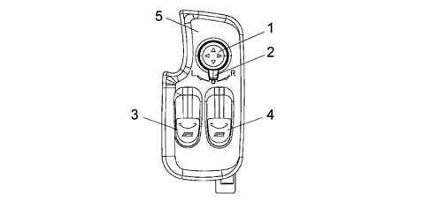
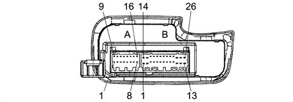
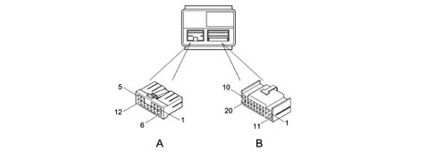
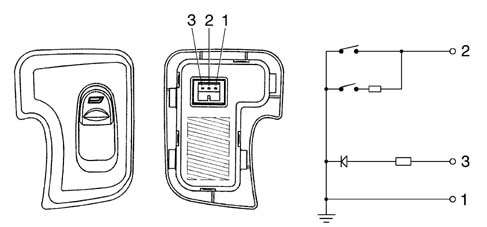

7005M FRONT ELECTRIC WINDOWS
- Path
- Descriptions > 70 FITTINGS > 7005 PASSENGER COMPARTMENT FRONT SIDE DOORS > 7005M FRONT ELECTRIC WINDOWS
- Kind
- system description
- Applies to
- engines: 2.0 JTS, 3.2 V6, 1.9 JTD 16V; all production periods
- Interactive page
- https://sloeber94.github.io/elrnDB-aGt/en/#/125000425
Applies to: engines: 2.0 JTS, 3.2 V6, 1.9 JTD 16V; all production periods
DRIVER'S DOOR NODE (NPG)
COMPOSITION
The driver's door node (NPG) houses the following controls:

1 - Door mirror positioning knob
2 - L driver's side R passenger side electric mirror selector
3 - L window control button
4 - R window control button
5 - Panel
OPERATION
The Driver's Door Node performs the following functions:
- supports the functions described in the table;
- receives and sends information on the B-CAN line (e.g. diagnosis, warning lights, commands, data);
- interconnects with the driver's front door wiring
N. | Operation | Mode |
|---|---|---|
F3 | power supply from key 2 discharge relay | D |
F40 | download +15 signal | C |
F89 | front puddle light shared power supply and timer L/R | C, D |
F91 | download front door open signal | C |
F99 | download boot opening signal from remote control or from switch in dashboard | C, D |
F104 | download front window opening buttons signal and motor power supply with manual and automatic up/down | C, D |
F111 | download front window closure signal from remote control and implement raise | C, D |
F112 | download front window closure signal from rain sensor | C, D |
F119 | manage door mirror deflector adjustment | D |
F181 | transmit outdoor temperature signal for climate control function | C |
F192 | download signal from outdoor temperature sensor and send value for display | C |
Rear view of connectors.

A - H44A 16 way
B - H44B 26 way
Pin-out
CONNECTOR A
Pin | Operation |
|---|---|
1 | Control passenger side window from passenger side button |
2 | n.c. |
3 | n.c. |
4 | Outdoor temperature sensor (S) |
5 | Outdoor temperature sensor (-) |
6 | Tail-gate release electromagnet relay positive control |
7 | Spare earth |
8 | n.c. |
9 | n.c. |
10 | B-CAN B |
11 | B-CAN A |
12 | n.c. |
13 | n.c. |
14 | n.c. |
15 | n.c. |
16 | n.c. |
CONNECTOR B
Pin | Operation |
|---|---|
1 | Window guide lift motor control |
2 | Window guide lower motor control |
3 | Boot release control negative signal from button in dashboard |
4 | n.c. |
5 | n.c. |
6 | Passenger side electric mirror |
7 | Passenger side L/R mirror actuation |
8 | Passenger side high/low mirror actuation |
9 | Shared - driver's electric mirror |
10 | Driver's side L/R mirror actuation |
11 | n.c. |
12 | Passenger window motor control lift |
13 | Passenger window motor control lower |
14 | Power supply for services on driver's door from F-47 |
15 | Driver's side power earth |
16 | n.c. |
17 | n.c. |
18 | Earth for driver's puddle light |
19 | Driver's side puddle light timed power source positive (connection with SB20) |
20 | Passenger side puddle lightt timed power source positive (connection with SB19) |
21 | Driver's electric mirror demister earth |
22 | n.c. |
23 | Driver's side high/low mirror actuation |
24 | +30 from F-39 (electronic, puddle lights, boot release relay driver, door release) |
25 | Power supply for services on passenger door from F-48 |
26 | Passenger side power earth |
WINDOW OPENING CONTROL UNIT
COMPOSITION
One specific window opening control unit for each door ensures the operation of the driver's side and passenger side window opening motors.
The electronic unit manages the following functions:
- Single front window opening control;
- Receipt of window opening button up-down signals from Door Node;
- Central window opening and closing (with signals received from Door Node);
- Window anti-crush safety function via Hall effect sensors;
- Short-drop function on door opening.
Short drop
Given the particular shape of the door (no upper frame), the correct seal of the door housing is ensures by 'raising' the glass in the seal with the door closed.
For this reason the control unit manages the short drop function.
- when the door is opened the glass, which is in the upper end of travel position, is lowered by about 4 mm;
- when the door is closed, the glass is completely closed; if there is a control to close the glass with the door open, the travel of the glass stops about 4 mm before the upper end of travel position; and is only completed when the door is closed.
Connections
.

Control unit pin-out
Connector A
Pin | Signal |
|---|---|
1 | n.c. |
2 | Direct supply |
3 | UP window motor supply output |
4 | n.c. |
5 | n.c. |
6 | n.c. |
7 | Direct supply |
8 | DOWN window motor supply output |
9 | Earth |
10 | Earth |
11 | Hall sensors earth |
12 | Hall sensors supply |
Connector B
Pin | Signal |
|---|---|
1 | Earth |
2 | Supply controlled by the ignition |
3 | Hall B sensor input |
4 | Hall A sensor input |
5 | n.c. |
6 | n.c. |
7 | UP window button input (activated to earth) |
8 | n.c. |
9 | n.c. |
10 | n.c. |
11 | Door open switch input (activated to earth) |
12 | DOWN window button input (activated to earth) |
13 | n.c. |
15 | n.c. |
16 | n.c. |
17 | n.c. |
18 | n.c. |
19 | n.c. |
20 | Ignition-operated supply INT/A |
PASSENGER SIDE SWITCH
The switch controlling the passenger window motor is not an electronic device but a simple control switch with an LED lighting up the ideogram

Pin out
1 - Earth
2 - Passenger side window up/down negative signal
3 - Symbol lighting
OPERATION
ELECTRIC FRONT WINDOWS
The control unit controls the operation of the left and right front window motor depending on the installation. The window opening function is only activated if the key is in the ON position, except for the central closing/opening of the windows or the timed delay at the key off.
The motor is controlled either manually or automatically, in accordance with the logic described below.
Mode is manual when the user starts and stops the system by hand by means of the control buttons. The motor stops when the buttons are released.
Mode is automatic when movement is started by pressing the control button for a period in excess of a preset value.
In both manual and automatic mode, stopping the windows (switching off the electric supply to the window motor) is determined when the glass reaches the upper or lower end of travel position or through the intervention of the safety system if an obstacle is detected or when the engine is started.
This is regulated exclusively by controlling the motor current, which must be self-adaptive, and/or by controlling the information coming from the Hall effect sensors at the motors.
The control unit must cut off window operation in the following cases:
- in the end of travel position, in either manual or automatic mode;
- automatic arrest, after pressing the up or down control again.
- when the engine is started, except during the lowering of the glass due to the intervention of the anti-crush safety function.
In the case of inconsistent commands issued simultaneously, there is no movement.
Anti-crush safety function
The protection is provided by a check on the torque and current of the motor. For each motor, there are 2 Hall-effect sensors which measure, via the number of pulses over time, the speed of the motor and the position of the glass. The signals coming from the sensors are acquired from the control unit.
This function intervenes as follows: the device interrupts the movement of the ascending glass, if an obstacle is present, in time to prevent a force of over 90 N being exerted on the obstacle;
Once the protection has inervened, the event is stored in memory. The protection will remain active for at least the next 2 ascents made immediately afterwards. Once the protection has intervened for 3 successive times, the anti-crush function is temporarily inhibited (in order to be able to shut the window in the case of deformation of the door).
The anti-crush protection is restored:
- at the next key-on;
- following a descent command;
- after 60 seconds from the last intervention of the anti-crush protection.
Short-drop
The position of the glass is constantly monitored using the information coming from the Hall effect sensors:
- When the door is opened, if the glass is in the upper end of travel position, it is lowered automatically (short-drop) for a certain number of impulses until it reaches a 'finishing' position that does not exceed 4 mm. (approx) from the end of travel position. If the glass is already lowered below the finishing position when the door is opened, it should not be lowered further.
- When the door is closed again, if the glass was closed before the previous opening, the control unit closes the glass until it is in the top end of travel position. If, on the other hand, the glass was open before the opening, the control unit does not do anything at all, keeping the glass open.
- If a glass closing operation is carried out, with the door open (and the key inserted), the glass stops in the finishing position.
- When the door is closed again later on, the glass closes until it is in the top end of travel position.
The previous considerations are valid if the glass is correctly initialized. If the glass is NOT initialized, or if there is a fault in the snsors, or if there is a 'loss of position', the control unit is unaware of the position of the glass. Therefore, when the door is opened, the glass is automatically lowered for a fixed time of around 300 ms, irrespective of the position it is in.
Setting
CLOSING WINDOWS FROM REMOTE CONTROL UNIT
Because the body computer node (NBC) is responsible for managing central closure (AUTO CLOSE) and opening (AUTO OPEN) of the doors, it can also manage opening/closure of the front windows (as well as the electric sunroof and courtesy lights) where this function is available.
The remote control unit is equipped with three buttons marked lock, unlock, boot and takes the form of a sending unit built into the key grip. It is fitted with a radio stage (433.92 Mhz) with a range of 20 m.
When a button is pressed, a variable code controlled by a mathematical algorithm (rolling code) is sent to a receiver built into the body computer (NBC). This node comes with a wire aerial that emerges and runs into the facia wiring (the aerial plugs into the facia wiring harness by means of a connector and can therefore be changed).
The function is active with the ignition key off, provided the window system is equipped with an efficient anticrush seal.
DOOR CLOSURE (AUTO CLOSE) - LONG BLINK
When the lock button is pressed (single, short press) all the doors are locked and the alarm (if present) is activated.
When the button is depressed for longer than 4 seconds (long press), the wndows raise and the sun roof closes. The alarm, if present, is activated.
A long pressing action is also referred to as 'super closure'.
When the button is released, movement is suspended. Re-depress for 4 seconds to resume movement.
DOOR OPENING (AUTO OPEN) - DOUBLE SHORT BLINK
When the release button is pressed (single short press), all doors are released and the alarm (if present) is deactivated; the courtesy lights also come on for 15 seconds or until key on.
When the button is depressed for longer than 4 seconds (long press), the front windows go down, the sun-roof opens and the alarm, if present, is deactivated. A long press is also referred to as 'super opening' When the button is released, movement is suspended. Re-depress for 4 seconds to resume movement.
FRONT PUDDLE LIGHTS
When the front doors are opened, the driver and passenger microswitches send a negative signal (earth) to the body computer node (NBC). This wakes up the CAN network and communicates door status to the driver's door node (NPG). The latter switches on the lights in the doors. The function is active with key-off or key on.
The connector is fitted with two independent outlets that are shared inside. These control the bulbs in the doors simultaneously.
When one of the front doors is opened, the bulbs come on for a maximum time of 3 minutes as a single event. Once the time has elapsed, the puddle lights may be relit only if one of the doors is re-opened.
Closure of both doors brings about immediate bulb deactivation.
If battery voltage is beneath a 10V threshold, the NPG must not control activation of the puddle lights.
DOOR OPEN INDICATION
This function is acive only with the key ON
Negative signals (earth) from the door and boot open microswitches are sent to the Body Computer Node (NBC) which sends the CAN network input status to the driver's door node (NPG); the instrument panel node (NQS) manages activation of the warning light.
DOOR MIRRORS
The doors mirrors are moved electrically and heated to demist.
This second function is managed by the NBC because the demisting coil is electrically connected to the heated rear window control relay.
Mirrors can be moved along the L/R axis and the up/down axis one at a time by means of a joystick and a selection slide with three stable statuses (L) left, central rest position and (R) right.
Movement is active with the key ON and maximum duration is 8 seconds.
Mirror movement is disabled by:
- Vbatt = 16 V (re-enabled for Vbatt = 15.5 V)
- Vbatt = 10 V (re-enabled for Vbatt = 10.5 V)
- Lack of INT signal (from CAN network)
The voltage level (charge status) is present on the CAN network.
MANAGING OUTDOOR TEMPERATURE
Temperature information is supplied to the network in degrees centigrade (°C). The value to be transmitted (every 500 msecis calculated by means of a special algorithm that takes into account a value downloaded (every 50 ms) from an NTC sensor on the door mirror and appropriately filtered.
The information in degrees celcius (°C) is precise to 0.5 °C and is sent via the CAN network for nodes (NCL-NQS-NBC). These users are responsible for applying relevant heating effect strategies:
- NCL climate control strategies;
- NQS permanent value display;
- NBC automatic demist strategies
When the battery is disconnected and reconnected, the control unit is able to ensure the CAN network is supplied with the outdoor temperature reading. If the driver's door node (NPG) detects circuit open or short circuit status for 10 seconds, it communicates the anomaly to the users via a special signal.
PERMANENT OUTDOOR TEMPERATURE DISPLAY
The instrument panel node (NQS) receives outdoor temperature information from the driver's door node (NPG) in the form of a finite magnitude in degrees centigrade. The driver's door node in turn receives the temperature signal from a sensor located on the door mirror. The instrument panel node (NQS) is responsible for displaying the information. If the outdoor temperature sensor fails, the (NQS) replaces the temperature reading with flashing dashes but the '°C' or '°F' indication remains. once 5 seconds has elapsed, the dashes stop flashing and stay on permanently. System operation returns to normal when the fault disappears.